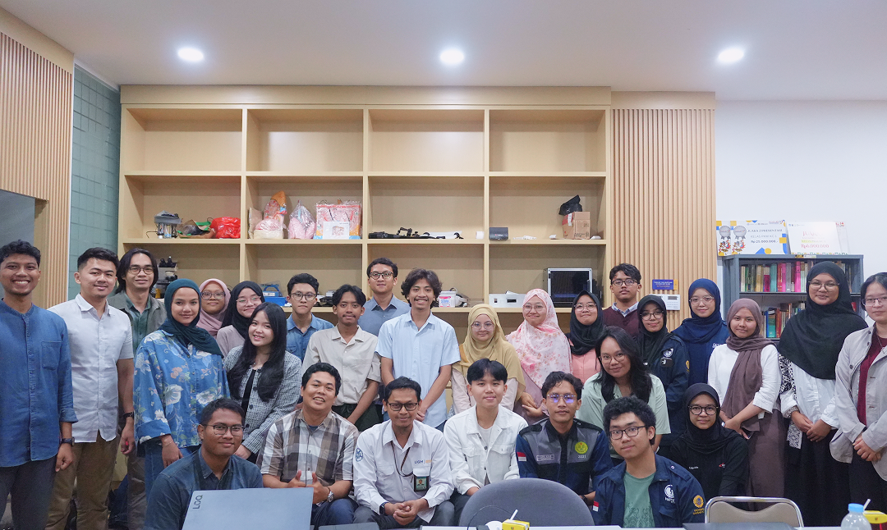

The Breathe Laboratory is a cutting-edge biomedical research facility dedicated to advancing healthcare diagnostics and technology. Our research spans a wide range of innovative fields, including digital microscopy, Electrical Impedance Tomography (EIT), microfluidics, and microwave imaging. By integrating these technologies with comprehensive gait analysis, vital signs monitoring, and algae biotechnology, we aim to develop holistic solutions for modern medical and environmental challenges.

Our Vision
To be a leading center of excellence in biomedical engineering, pioneering advanced technologies in microscopy, EIT, microfluidics, and microwave imaging that transform healthcare diagnostics and improve quality of life.
Our Mission
To conduct rigorous academic research and develop practical applications in gait analysis, vital signs monitoring, and algae-based biological systems. We strive to foster interdisciplinary collaboration to create intelligent medical devices and sustainable healthcare solutions.
Our Facilities
Equipped with state-of-the-art instruments to support advanced research
in health technology,
biosignal analysis, and medical device innovation.